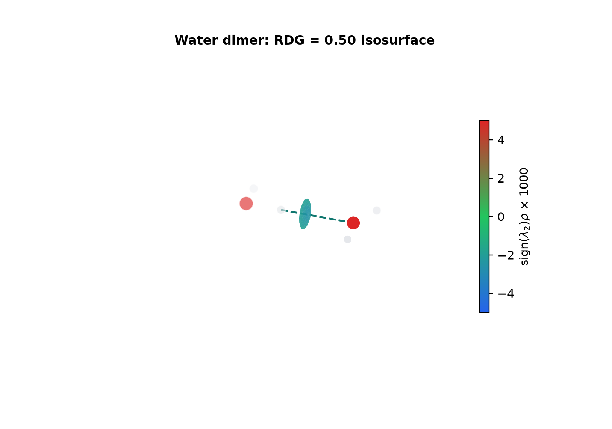
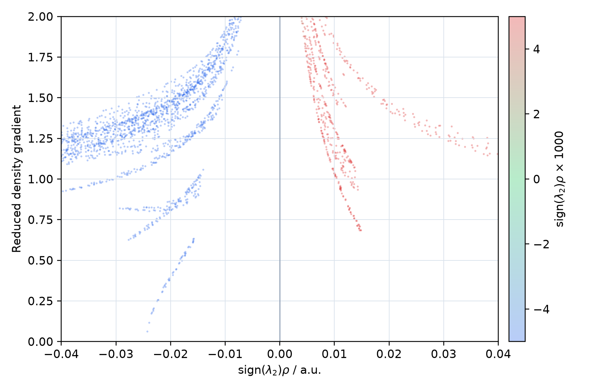

Noncovalent Interaction Plot
NCIplot
NCI解析に特化したprogramとして、波動関数由来密度またはpromolecular densityからRDG、density、VMD scriptを生成します。
- 位置づけ
- NCI専用real-space解析
- 主な入力
- wfn/wfxまたはXYZ、NCI input
- 主な出力
- density/RDG cube、dat、VMD script
1. 概要
NCIplotは電子密度ρとreduced density gradient（RDG）をgrid上で計算し、低density・低RDG領域を非共有結合性相互作用として可視化します。理論式とsign(λ2)ρの読み方はMultiwfn章のNCI節と共通です。
専用inputからgrid、fragment、cutoff、出力を固定しやすく、batch計算と再現可能なNCI図の作成に向きます。
2. Wavefunction densityとpromolecular density
| 入力 | 密度 | 特徴 |
|---|---|---|
.wfn/.wfx | 量子化学計算の波動関数から評価 | 分極・結合形成を反映。計算条件に依存。 |
.xyz | 孤立原子密度の重ね合わせ | 高速で大系に適用しやすいが、分極・charge transferを自己無撞着に含まない。 |
二つのdensity modelの結果を同じものとして比較しません。特にイオン、強い水素結合、反応途中の構造では差が重要になり得ます。
3. 導入と実行環境
公式repositoryのsourceをFortran compilerでbuildし、原子density dataを参照するNCIPLOT_HOMEを設定します。
git clone https://github.com/aoterodelaroza/nciplot.git
cd nciplot/src
# Makefile.incでcompilerとflagsを環境に合わせる
make
export NCIPLOT_HOME=/absolute/path/to/nciplot
export OMP_NUM_THREADS=4compiler、flags、commit/tag、OpenMP thread数を記録します。clusterではmodule、library、stack size等も実行scriptへ残します。
4. 入力file
最小入力は分子数とwavefunctionまたはXYZ fileです。次はwavefunction densityを使う例です。
1
water-dimer.wfn
OUTPUT 3
CUTOFFS 0.20 2.00
CUTPLOT 0.05 0.50
ISORDG 0.50XYZを指定するとpromolecular densityを用います。複数分子または選択atomをfragmentとして扱う場合はFRAGMENT、分子間成分へ絞る場合はINTERMOLECULARを使用します。
nciplot water-dimer.nci water-dimer.out5. Gridとcutoff
- CUBE / RADIUS / RTHRESgrid領域と分子周囲の余白を定義。
- INCREMENTSx/y/z方向のstep lengthを定義。
- CUTOFFSdatへ記録するdensity・RDG範囲を制御。
- CUTPLOTこの版ではdensity上限とRDG isovalueを2値で指定。
- ISORDG生成VMD scriptのRDG isovalueを指定。
異なる系を比較するときは、grid spacing、density cutoff、RDG isovalue、sign(λ2)ρ色範囲を共通化します。default値を使った場合もversionとともに記録します。
6. 出力fileとVMD
| 出力 | 内容 |
|---|---|
*-dens.cube | electron density。等値面のcoloringにも利用。 |
*-grad.cube | RDG。低いisovalueで相互作用領域を表示。 |
*.dat | sign(λ2)ρ等に対するRDG scatter用data。 |
*.vmd | VMDでcubeを読み込んで表示するscript。 |
VMD scriptを開始点として使い、最終図ではisovalue、color scale、material、background、projection、分子orientationを記録します。
7. Multiwfnとの関係
NCIplotはNCIに集中し、明示的なinput fileとVMD script生成を備えます。MultiwfnはNCIに加えてIGMH、IRI、QTAIM、ESP、orbital等を同じwavefunctionから解析できます。
標準的NCI図をbatchで作る場合はNCIplot、NCI/IGMH/IRIを横断して同じ系を解析する場合はMultiwfnという使い分けが考えられます。どちらを使っても、density modelとgrid条件が結論を左右します。
8. 検証
- Input densitywfn/wfxまたはpromolecular、method、basis、geometry。
- Grid全interaction領域を含み、境界で等値面が切れていないか。
- Cutoffdensity、RDG、plot、intermolecular判定の値。
- Color
sign(λ2)ρの範囲と色方向。 - Comparison同一条件の図とscatterを併用し、視覚印象だけで結論を出さない。
Reproducible Example
9. 水二量体のNCI解析
固定した水二量体構造についてPySCFでRHF/def2-SVP波動関数を計算し、NCIplot 4.2.1 alphaでwavefunction-density由来のNCI解析を行いました。


図の見方
- 低RDGかつsign(λ2)ρが負の点はattractive-likeです。この例ではO-H···O間の青寄りの面と負側のspikeが対応します。
- 0付近の緑は弱い接触・分散的領域として現れやすく、正側の赤はrepulsive/steric-likeな密度重なりに対応します。
- 色は相互作用の定性的指標です。表面積、色、spike位置から水素結合energyを直接求めることはできません。
- density model、grid、cutoff、isovalueを変えると図も変わるため、比較では同じ設定を固定します。
10. 参考文献・公式資料
- NCIplot, Official repository and manual.
- J. Contreras-García et al., “NCIPLOT,” J. Chem. Theory Comput. 2011. DOI
- E. R. Johnson et al., “Revealing Noncovalent Interactions,” J. Am. Chem. Soc. 2010. DOI
- VMD, Official site.